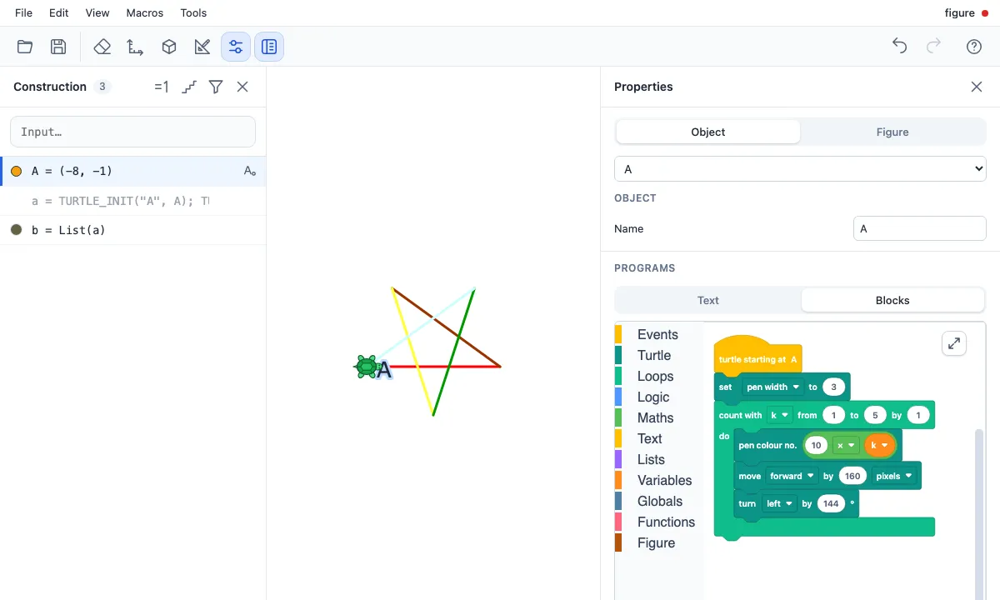
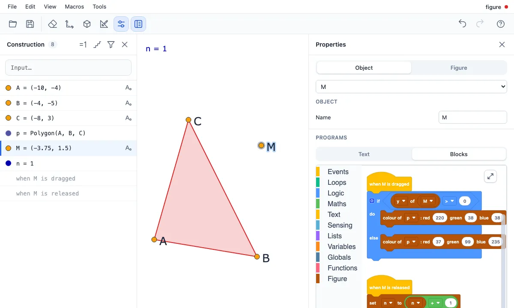
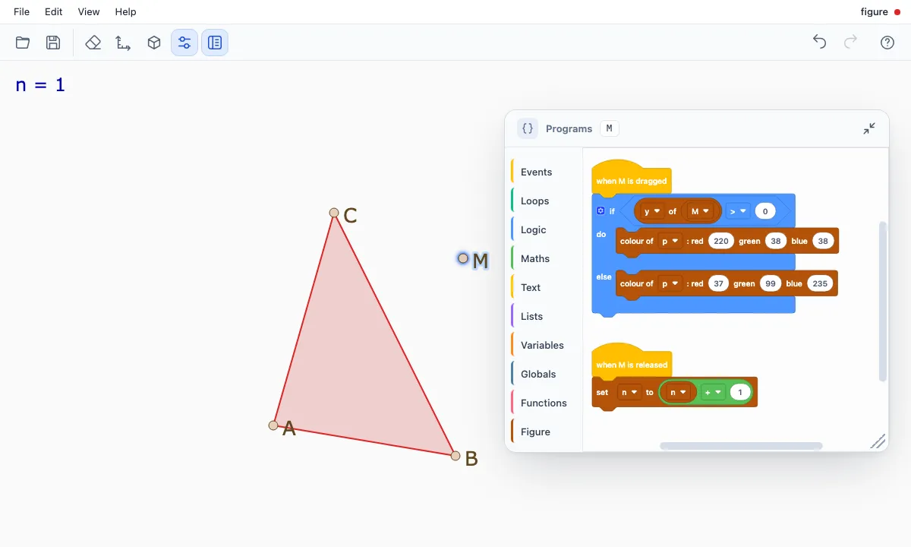

Expressions and sliders
Expressions
Any line that is neither a point nor a command creates an expression, shown at the top left with two decimal places. Its kind is deduced from the text:
| Line | Kind |
|---|---|
a = 3,
list = [1, 2, 3]
|
constant |
t = "Hello" |
text |
f = 0.5x^2 - 4 |
function of x (y, z, t); f(2) calls
it, f'(2) calls its derivative
|
f(x) = ax^2 + bx + c |
curve of the function, plotted:
ax reads a x, the sliders a, b, c
are created; f(2) calls it too
|
f(x) = x^2, (-1 <= x <= 2)
|
curve drawn on an interval, written as in
GeoGebra (≤ or <=);
a bound may be missing ((x >= 0)), and each bound may be a formula ((0 <= x <= a))
|
E = d(A, B) |
measure, recomputed when the figure moves |
u = "AB = " + round(d(A, B)*100)/100
|
computed text |
In a formula, a point stands for its coordinates, a segment for its length, a circle for its radius, a polygon for its area, an angle for its measure. Full syntax: Formulas and programs.
An expression is moved by dragging its text; attached to a point, it follows it. Touching it selects it, or writes its name during an input.
Sliders
r = Slider(0, 5, 2): from 0 to 5, value 2. The
bounds can be expressions or formulas (Slider(0, d(A, B), 1)). Step, length, orientation, knob and animation are set in the
properties.
r = 5 turns it back into a constant. Selected, it
can also be animated
with the spring.
An unknown name starting with a lowercase letter creates a
slider from −5 to 5, with step 0.1 and value 1:
A = (a, 4), d = y = m x + p. A Greek
letter creates an angle from 0 to 360°, with step 1° and value
45° (from 0 to 2π in radians): P = (3; α). A
refused line does not keep its sliders.
Computed points
-
M = (x(B) + 1, y(A)): coordinates given by formulas. -
N = Point(2*B - A): a formula whose value is a point. -
P = (3; 60°): polar coordinates, radius and angle.
When the value of a line name = formula is a point
or a list of points, buttons at the end of the line offer
Point,
List of points,
List of segments or
Expression.
Enter takes the lit button: point or list for an
uppercase name, expression otherwise. Hence
list = [1, 2, 3] and not
L = [1, 2, 3], which would be read as a point in
space.
Lists of points
q = List(pts) draws the points of the expression
pts; an undefined point breaks the drawing. A
selected expression whose value is a list of points also offers
and
in the context area (and
for a point value): the line is
written and the expression hidden.
Sequences
L = Sequence((k, k^2), k, -2, 2) places the points
(k, k²) for k from −2 to 2, by steps of 1; a fifth argument
gives another step. The item can also be a number,
Segment(P, Q), Line(P, Q),
Circle(O, r) or Polygon(A, B, C, …),
whose arguments are formulas in k:
Sequence(Circle(A, k), k, 1, 3). In space, a third
argument gives the direction u of the circle’s axis, orthogonal
to its plane: Circle(O, r, u).
A sequence can contain another, whose bounds read the first
one’s variable:
Sequence(Sequence((i, j), j, 1, i), i, 1, 4). In a
formula, a list of points is read by its name, from 0:
L[0], L[k-1], L[i][j] for
nested sequences, L.length for its number of items.
Write 2*i: 2i is a complex number.
Programs
An expression can be a program: statements separated by
;, the last one giving the value; it can style
other objects (S1.setHidden(1)). Language:
Formulas and programs.
- (palette, “Programs” family) opens an empty program; Create or Ctrl Enter creates the expression.
- For an existing expression, the Definition section of the properties edits the text on several lines: Enter keeps the indentation, Tab indents, } unindents, Ctrl Enter applies, Esc restores, Format indents according to the braces.
- An error selects the faulty line or the unmatched delimiter.
Blocks and turtle
A program can also be written in blocks: the Definition section switches from Text to Blocks. Blocks are dragged from the categories (Loops, Logic, Maths, Text, Sensing, Lists, Variables, Globals, Functions, Figure) and snapped under the program block; a return block gives the value. Each change applies at once and is undone like the others. Text and blocks show the same program: the choice is kept for the next ones.
Globals, shared by all the programs of the figure, are created in the Globals category with Create a global…; a program sets, increases or reads them. In a workbook, they are common to all its pages: a global set in one page has the same value in the others.
In the Lists category, the L [ i ] block reads item number i of a list, the first being number 1, and the L [ i ] = v block changes that of a variable or a global.
The last item of block reads the last item of a list; append … to the end of lengthens a variable’s list and remove the first item of (or the last) shortens it. break the list interrupts the line drawn by a list of points, like the turtle’s lifted pen: the points added next start a new line.
In the Loops category, the wait … ms block pauses a button’s program, the figure being redrawn meanwhile: enough to animate step by step. Touching the button again stops the running program.
In the Sensing category, the
ask … and wait block asks a question and pauses
the program until the answer, typed in a field and confirmed
with OK or Enter; the answer block then reads
it, as a number if it is one (12.5), otherwise as a
text. Each run of the program has its own answer.
In the Functions category, a function can also give a value: the to … return block creates a block that calls it and fits where a value goes. A program’s variables are shared by its functions, except in the functions of DGPad figures, which keep the variables they set to themselves, as in DGPad.
The Figure category also gives the angle of
three points (angle 180°, between 0 and 180°,
or 360°, oriented), the
window width, the
unit in pixels and the other quantities of the
view; arrows of … puts arrows at the ends of a
list’s segments (length and width in pixels). The
expression block takes a typed formula,
f(t) for instance to compute a function of the
figure. In the Text category,
show the message displays a message.
Turtle, in a point’s contextual area, creates the turtle starting from that point and opens it in blocks. It moves (in pixels or units), turns (in degrees), lifts or puts down the pen, changes colour and width, fills, writes, turns towards a point or goes to it. Its drawing, a list, follows the point and the objects the program reads. While its program shows, the turtle is drawn where it ends, facing its heading (an arrowhead in 3D, green when its top faces you): each block added shows it moving or turning.

The turtles of DGPad figures open the same way: with the
properties panel open, touch their
blk_turtle_exp_… row in the “Construction” panel. A
program with an instruction that has no block stays in text.
The buttons of DGPad figures (an arrow followed by a caption) run their program when touched, even with the properties panel open: the program can thus be tried while it is being edited. Touching their circle with three dots selects the button, dragging it moves the button; Settings, in the contextual area, opens its program in blocks. The set … to block of the Figure category changes the value of an expression.
Turtles and buttons are also created from the tool palette,
Programs family:
Turtle starts from the designated point (an
empty spot creates one),
Button goes where designated; each opens its
program in blocks at once. Typed in the input line,
Button("Run") creates a button at the centre of the
view; its row in the “Construction” panel changes its caption.
Event programs
As in Scratch, a program can answer an event: a draggable point being dragged, pressed or released, an expression whose value changes. It styles objects and, with the set … to block, changes the value of an expression or places a free point. The “dragged” program also runs while the point is animated.
In the tool palette, Programs family, When the object is dragged, When the object is pressed and When the object is released designate a draggable point, When the value changes an expression. The program opens in blocks under its first block, when M is dragged for instance; if it already exists, it is shown.

Here, dragging M colours the triangle red above the x-axis, blue below; releasing it increases n by 1.
- The Programs section of the properties of a point or an expression shows all its programs, its turtle included, each under its first block and editable. Text shows the one last clicked.
- Without a program, Add a program opens the Events category: dragging a first block into the workspace creates the program.
-
Each program has its row in the “Construction” panel,
when M is draggedfor instance: touching it opens it. - Dragging a stack onto the list of categories, or deleting its first block, deletes the program.
- Right-click on a first block: Fold the stack leaves only that block, a badge giving its number of blocks; a click on the badge or Unfold the stack opens it again.
- Right-click on the background: Copy all blocks; on a block: Copy selected blocks copies that block and those under it. Paste blocks puts them where you clicked, for the same object, another one or another figure. Copied with their first block, they go under the same first block of the object if it is empty, the program being created if needed; otherwise they stay beside it, to be plugged in.
The button at the top right of the blocks enlarges them over the figure, in a see-through window: the panels fade out, the figure stays in place. The window moves by its title bar (a double click puts it back in its place) and resizes by its corner; the same button brings the blocks back into the panel.

The event programs of DGPad figures (dragging, pressing and releasing a point, change of a value) open and are edited the same way.
The opening program of an expression or a button of a DGPad figure runs once, when the figure opens; it shows under the when the figure opens start block.